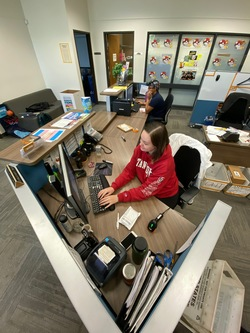
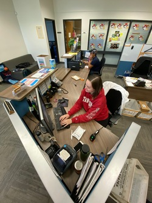
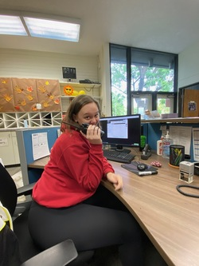
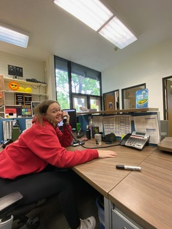
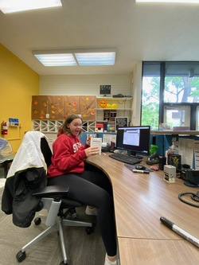
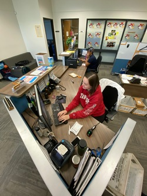
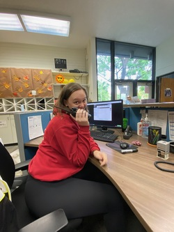
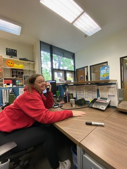
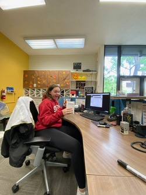

Isabel Fryett
I am currently a second-year Sociology student at the University of California, Riverside. I am hoping to minor in Law and Society, so I can pursue the Criminology path later in life. I am also a student in the University Honors program at UCR. I am a very dedicated student and work hard to get the grades I deserve. I love learning new things, which is one of the reasons my class list is always so diverse, with STEM classes and humanities classes. I enjoy learning and figuring out things that pose as a challenge. Including STEM classes into my schedule help me learns things that can contribute to my future career of becoming a Forensic Psychiatrist. I want to learn why criminals do what they do and why they act so different from not only people like us, but also people who have faced similar circumstances as them.
I work for Housing, Dining, and Hospitality Services at the University of California, Riverside. I currently work as a Housing Services Ambassador which helps me interact with Professional Staff at the University level, but also work on my customer service skills. I enjoy working with higher-ups because it provides me with an inside look at how people in the workforce work. It also provides me with insider knowledge of the university. This allows me to help students like myself with any issues or problems we may be facing with the university itself. This job also provides me with knowledge of other jobs that are out there that some people might not realize exist.
While being at university, I have not found the time to join clubs yet, but I am looking for the best fit for me. I really enjoying playing soccer, going to the gym, cooking and baking, and writing. These are all things that help alleviate the stress of college. I do put my grades first though. My end goal is graduate school, preferably in the U.K. I am British, so I would love to be able to move back to the U.K. within the next few years, once I finish up university. My parents were both born and raised there, so I am hoping to possibly go to the university in which they met at. All of my family also lives in the U.K. so it would be very easy for me to see them more often and spend more time with them. With my job experience now, as well as being in University Honors, I believe I stand out from the crowd. I have a plethora of jobs in different fields, as well as showing some dedication to my academics.
Experience
Housing Services Ambassador
• Work with Professional Housing Staff and assist them in various tasks
• Provide multiple serivces for over 2,000 residents
• Work with Word, Excel, and Google Drive
Team Member
• Created and served various superfood products
• Worked with a Point-of-Sales system
Intership
• Assisted Medieval Literature Professor with organizing her books
• Catologued books and artifacts
• Researched artist books for an exhibit
Education
UC Riverside
Portfolio
.jpeg) 





 
